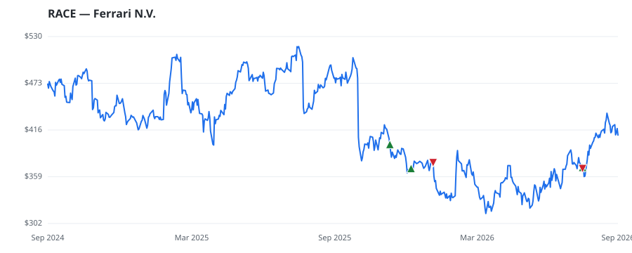

bullish · bearish · n/a — dots: price>SMA10 · SMA10>SMA50 · SMA50>SMA200 · up>down volume (20d)
Other · large cap
Members who bought RACE earned a dollar-weighted -1.0% from their disclosure dates, versus +2.5% for the S&P 500 over the same holding windows (-3.5% alpha).

▲ green = a disclosed purchase · ▼ red = a disclosed sale (plotted on disclosure date)
Ferrari designs, engineers, and manufactures some of the world's most expensive luxury cars. With supply carefully controlled to be below demand and a brand steeped in decades of motor racing history, a Ferrari is viewed as a status symbol. In 2025, the company sold 13,640 vehicles at an average price over EUR 520,000 with more than 80% of its vehicles being sold to existing Ferrari clients. Eighty-four percent of revenue is generated from the sale of cars and spare parts and 10% from sponsorship, commercial, and brand activities including racing and lifestyle activities. In 2025, the Europe, · website
| Member | Chamber | Out-performer | Disclosed buys $ | Return on buys |
|---|---|---|---|---|
| Gilbert Cisneros | house | — | $16K | -1.4% |
| Alan Armstrong | senate | — | $8K | +0.0% |
Disclosed $ figures are bracket midpoints — filings report ranges (e.g. $1,001–$15,000), not exact amounts.